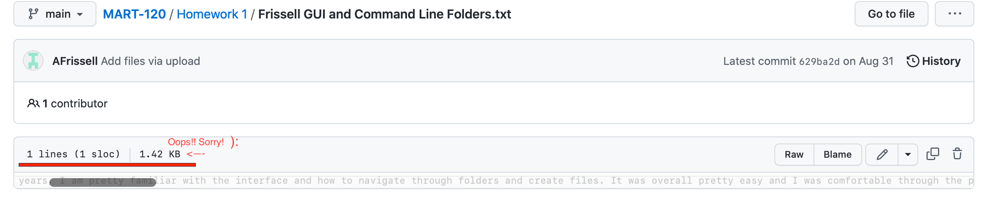
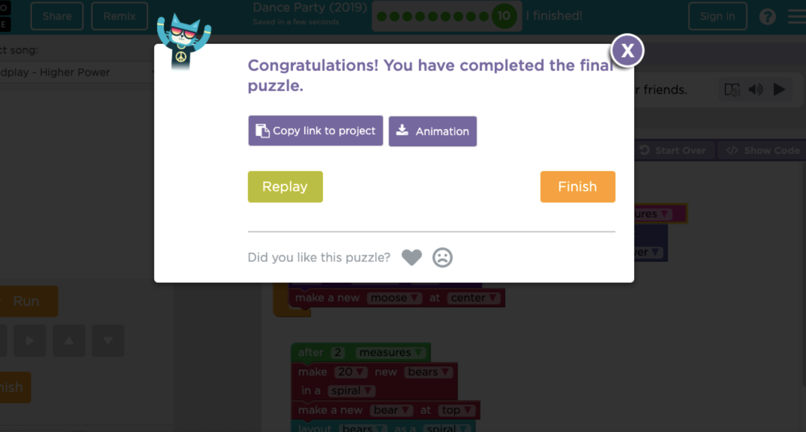
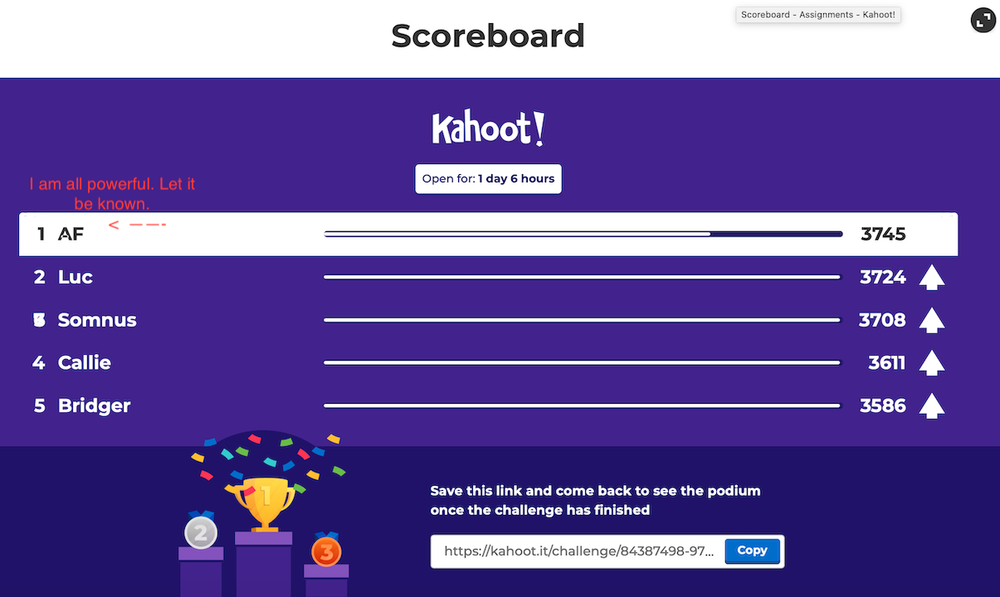

Portfolio Page
Here are all the cool things I've been making this semester!Week 1
Github Week 1 Link

This week we didn't make anything, only learned the basics of folder organization,
introduced ourselves, and learned how to work with GitHub for the first time! I had some
struggles with Github, but figured it out in time to do it correctly for Week 2!
Week 2
Github Week 2 Link
 This week we watched "The Last Lecture", learned about learning styles,
This week we watched "The Last Lecture", learned about learning styles, played through Dance Party Hour of Code, then finally created a work of art using code,
as seen above! We did this in Artist Lab, and it helped establish the logical thinking
one must use when coding! As you may see, this image tells the epic tale of a Wizard,
and Witch dualing the spirits of darkness, including three dragons (though they are only
the size of a housecat each, they can breate enough fire to roast a marshmellow!) In this
epic fantasy adventure there is romance, tragedy, and a scale of adventure that would
rival even the greatest stories of Tolkien and the other great fantasy literary authors.
Week 3
Github Week 3 Link
 This week we talked about grit, and the idea of pushing past hard challenges. To pair
This week we talked about grit, and the idea of pushing past hard challenges. To pair with that, we made our first "game". My game was about a frog contemplating the wonders
of blinking. It was certainly a challenge, even with just drag and drop, and had me thinking
more about how code must be structured to work properly. Sadly, the link for the project will
not open, and I cannot get a visual of this week. I seemingly can't even open Cassen's example
for this project. It seemingly exists only in memory now. It was a simple game, that really was
just an interactive conversation between a frog and a bat in the woods outside a party. Without
any access to visuals of this project, I have included my grit score. I have MORE GRIT than 30%
of Americans. I have always felt I should belong amongst the top 70%, and here is undeniable
PROOF that I have GRIT. Which is why I have sent this screenshot to almost everyone I know.
Week 4
Github Week 4 Link
 This week we did a number of things, from making a little game, to creating a simple application.
This week we did a number of things, from making a little game, to creating a simple application. Once again, as you can see with my game, I am following with the theme of great spirits and epic
cat-sized dragons in my new great work, Secret Guardian. This is largely based on the illustrative
masterpiece of my Week 2, but making it more interactive. It was really interesting to learn how to
attatch controls to key pressing, to allow movement. As well as putting in code to make the dragons
flee the raw anger and terror of my spirit protagonist. Together, it created the epic story of an
unnamed secret spirit that protets humanity from monsterous dragonlike gargoyles. The gameplay is
sophisticated, with artifical intelligence and three unique dialogue options for each of the
gargoyles you vanquish.
Additionally, we made an app, which was less fun but still interesting as we had to figure out the
logic behind creating something from an idea in our heads. In my case, I went with something
practical, a german translation quizzer, so you can test yourself on the German versions of English
words! Keep an eye out, this one might be topping the app store charts here in a few weeks.
Week 5
Github Week 5 Link

 Genuinely really enjoyed making the 3D setting in Alice for the odd little game we made this week.
Genuinely really enjoyed making the 3D setting in Alice for the odd little game we made this week.Mine is especially strange, as you play as a rabbit an odd purgatory like setting, talking to demons,
lost spirits, and a talking goat, who is seemingly Lucifer. I enjoyed figuring out how to make a first-
person camera that follows the character, looking over the shoulder. You interact by clicking characters,
or by physically colliding with them for additional dialog options. Definitely a Halloweeny game for the
season it was made.
Week 6-8
Github Week 6 LinkGithub Week 7 Link
Github Week 8 Link


Over the course of these three weeks, we built the web pages seen linked here! You can access the other
pages at the bottom of the screen. On week six, we learned some of the basics of javascript by learning
how to make hyperlinks. I atatched some funky websites I know about, as well as some restauraunts. We also
learned how to add images, create checkboxes that you can interact with, linked the pages together, and more!
In week seven we expanded on the previous week, building these webpages by adding styles to make the pages
more visably appealing. This means changing fonts, font colors, etc. We learned how to work with external
style sheets, how to use ID selectors, reference Bootstrap, create background images, and more! This is where
the webpages started to become more visually flashy, as they are now. Though, admitedly, the styles vary quite
a lot through these pages, to fit the criteria for our homeworks. Still, they look a lot better than boring plain
boring text! I reall enjoyed creating the background for Page 2!
Finally, in Week 8, we finished these webpages, making them even more interactive! The primary focus for this week was
Page 3, where we made the boxes turn red if the email or name wasn't filled in. Additionally,
we learned how to make it so the user gets a pop up message if they don't agree to the terms of service. While I am more
interested in the creative side of this class, this stuff also interests me. They are additional tools to have at my
disposal in my future creative projects. My main focus is interactive art, and games are the best means for that. However,
websites also have a similar potetntial. When working on these weeks, I found myself wondering how I could make an artistic
website using the interactive tools we learned in class. Now, in retrospect with even more javascript, there is certainly
potential for such a project. Though, it would take time and I'd need a good idea before jumping into something like that!
Week 9-10
Github Week 9 LinkGithub Week 10 Link
 This week is when things really started to feel like they were clicking for me. In this week, we learned how to add basic
This week is when things really started to feel like they were clicking for me. In this week, we learned how to add basic shapes in Javascript, through the use of p5.js. I really enjoyed figuring out where things can go, and as you can see, I
spent a fair bit of time on this. I liked thinking about the layering, it's a lot like laying something in an art program,
and it is super interesting seeing how that could be done through code. Color was especially interesting, as this was really
the first time I've encountered creating colors through code alone, using RGB. While it still alludes me a little, I feel like
I have a better understanding of how computers see color, which is a weird and interesting thing as a digital artist. I had extra
time this week, and as such I fleshed out this image, trying to capture some likeness. Though for the sake of simplicity I gave
myself a cartoonish looking crown, with basic shapes. I really enjoyed learning how to place all the basic shapes, and I had fun
with this project, proving that indeed, coding can be fun! Because through it, one can create! And that is super cool to me!

Link to animated file! Week 10 was pretty straightforward, we simply learned how to move the objects we created in Week 9! I once again really enjoyed
this, especially as someone who enjoyes animation! Animation is so incredibly time consuming that this alternative form of animation
is especially noteworthy! It really got my creative juices flowing in how to animate a game. It leads to some natural questions on what
should be animated by hand, turned into a sprite sheet, and uploaded, and what should be animated through code. Animating through code
is interactive, and I could imagine using it for making characters heads move to follow the player, and things like that. Anything that
is stiff, without need for the organic movemenet of hand animation could also be animated through programming. I'm curious if there is a
performance difference between using sprite animations or programmed animations. Are sprite animations more intenseive? How many characters
can share a screen before performance issues start to occur? I imagine the more characters you have doing their own individual things, the
more work a computer has to do. Is this something I should be thinking about when I'm creating my own 2D games, or have computers gotten
powerful enough to handle that kind of thing for 2D games? These are all thoughts I will be keeping in mind as we dive further into the world
of programming next semester!
Week 11-15
Github Week 11 LinkGithub Week 12 Link
Github Week 14 Link

The discussion of week 11, when is it okay to use other's work, was particularly interesting to me. When developing games, there are so many
different elements. As an artist, it's tempting to try and build an entire game completely from scratch. But that is a tremendous amount of
work. I may be able to do the artwork and programming, but it is difficult to do something like sound or music given my relative lack of
experience with that medium. but music is such a tremendous part of games, or really, any animation. Animation can be dramatically elevated
by good sounds. So if I don't have the skills, how can I get good sound? Do I use free online resources? What are their quality? Should I get pay
someone else to do it? How much do I pay them? How should they be credited, and who owns the rights to the music if it's made for a game? This is
just one example, but I would love to learn more about ownership as we move forward, especially in regards to premade music or prebuilt code from
online libraries. The last thing I'd want to do is spend a sizable fraction of my life creating a game that has copyright violations!
Over the course of these 3 weeks, we built our first game in javascript, though we never did get to collisions. Regardless, I really loved building
this from the code up, something about building games from scratch, even ugly ones, is satisfying as a creator. Looking at the complex structures of
the code, compared to the relatively clean simple game is really interesting. It really does feel like building invisable webs of interactions to apply
to art (or in this case, basic shapes.) It once again made me excited about programming as a tool as a means to elevate art to not only be animated,
but also be interactive. This is a whole new level of creation, and one that I am so excited to learn more about! Though the game we made was pretty
basic, and lacks decent visuals, I could picture how to create a complex maze. With collisions, one could take damage by touching walls, pushing the
player into precise movements to navigate a level. While this isn't the kind of gameplay I personally enjoy or want to make, the fact that we're getting
to create what resembles a game is incredibly exciting! Though simple, I tried to give my game a color pallete of gray and red, to remain kind of
aesthetic. I also made a quick simple sword decoration to fit in with the title. It's small but fun!
Week 12 was a breeze, as all we had to do was condense our previous work into functions, both for the sake of better organization, as well as ease of
editing. This week's information about maintence was especially insiteful, because I feel that when I finally get to building my own games, making
them easy to return to and edit is a big deal. Especially when I'm learning. I'll want to come back, tweak things as I learn, make sure that things still
run over time, etc. Though it was easy, it was otherwise a crazy busy week for me, so I appreciated the simple task of the week, it allowed me to survive
another week without getting overwhelmed. The conversation on diversity was also really interesting, and I enjoyed reading what my classmates had to say.
It's a big topic but an important one, and I really appreciate Cassen's emphasis on diversity. I later went to his lecture on diversity in online classes,
which relates perfectly to this discussion! It got me thinking about how I can use my future projects, including my games, to solve social issues. This is
something that I personally care a lot about, so I would love to learn more!
Week 13 was break, and so we didn't have class. Over this time, however, I started to think about a future game project I am interested in, a simple side
scroller with a strong emphasis on story. This side scroller would be in the style of a medieval manuscript, and while I want to keep gameplay mechanics
to keep the code simple, I want to go crazy with the art, andimation, writing, and sound! Night in the Woods is one of my favorite games, and I love how
it incorporates social issues, from labor to LGBTQ+ acceptence, in a way that blends so nicely with the characters and story. I want to learn from that and
find ways to subvert my medieval setting by incorporating some modern social issues. I'll need to take my time with the writing to make sure that I am being
thoughtful with my themes and characters.

Link to game!
In Week 13 we also worked on random obstacles. This was really interesting to me, trying to create randomness in code. Thankfully, it wasn't
too difficult with the tools Cassens provides. The aestehtic of the obstacles is pretty unique, like meteors flying across the screen. I also added some basic
"collisions" to game, though I am sure that what I did isn't the correct way. It also only works for the world borders. I just made it so that the player cannot
escape off the edges of the sceen by flying through the wall. Instead, the player is teleported instantly to the pixel before the edge. of course, there is a gap
for the exit to allow the playr through. It works pretty well, but I can't figure out how to use the same logic to create collisions on curved, moving, or diagnol
surfaces. I'll just need to be patient until next semester when we are provided more tools to work with collisions.
Finally, in Week 14 (or homework 14), we finished the semester by learning about arrays. Admitedly, this was a pretty stressful week as final projects were due, and so
I was more frantic in trying to understand arrays and get the assignment complete so that I could move on to my pressing projects. That is never an ideal learning
enviorment, so I was thankful to find that this week was relatively easy, much like the functions week. Simply, all we had to do was convert our code for the random
flying objects so that we could easily change certain characteristics. From size, color, to the amount that appear on screen at once. I absoluetly see the appeal of
using arrays, and I am curious how they apply to other projects. Since we've only made this one project, it's hard for me to figure out how these abstract fundemental
concepts apply to creating other kinds of games, such as ones with a moving camera. I am excited to learn more about these ideas in the context of other programs,
especially unity. Though I am sure there are a lot more fundmentals to master before trying to bring these elements together into one cohesive whole in Unity.
Conclusion
Without my usual studio classes this semester, this class became something of a creative outlet for me. I really enjoyed not only learning how to use such atechnical tool as programming, and thinking about ways to use this new tool to elevate my art. I have always been inteimidating by programming, and told by
people that I should avoid it, because it is boring and "painful" to do. Thankfully, this class has made programming very accessible. We are learning slowly,
but that makes it less of a big scary topic. The opening weeks really eased us in, introducing us to the logical mindset of programming through drag and drop
projects. We learned some basic webpage design, as well as the very start to how one might build a game in javascript. Programming has gone from a big intimidating
mountain, to something that I feel I can learn. I am excited about the creative oppertunities with these new skills. I chose to do this portfoilo option for the
final, as I feel it is really useful to go back and review what we learned to understand how it all works together. This doc will help me at the start of next
semester, by providing an easy resource for me to access old assignments, as well as my own thoughts.